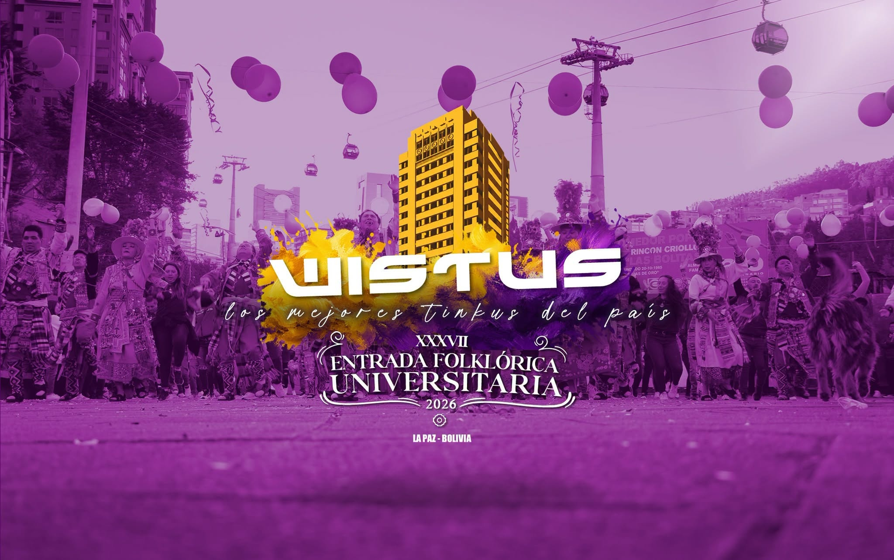

TINKUS WISTUS
“Fuerza, Pasión y Tradición Ancestral en el Corazón de La Paz”
“Wistus no es simplemente una danza; es un latido colectivo que hace retumbar el asfalto de La Paz. Llevamos el ritmo del Tinku en la sangre, transformando cada ensayo en hermandad, cada paso en devoción y cada salto ceremonial en tributo a nuestras raíces.”
Nacida en el seno de la juventud universitaria boliviana, la Fraternidad Folklórica y Cultural Tinkus Wistus custodia más de tres décadas de gloria ininterrumpida en la Entrada Universitaria de la UMSA y las principales festividades patrimoniales de Bolivia. Convocatoria abierta para fraternos nuevos y antiguos de la Gestión 2026.
- Horarios
-
Sábados y Domingos: 15:30 – 19:30
Miércoles (Ensayo Extraordinario): 19:30 – 21:30 - Local / Sede
-
Cancha Polideportiva Munaypata
Sede Social: Calle Almirante Grau, Zona San Pedro, La Paz, Bolivia - Directiva
-
+591 76543210 /
+591 70123456
contacto@tinkuswistus.bo - Comunidad
- Instagram Facebook TikTok YouTube
- Portal
- Acceso Fraternos Registrados →
Galería en Movimiento
Ensayos & Padrón 2026
Nuestros Bloques
Cada bloque representa una faceta viva de la danza del Tinku: desde la bravura guerrera hasta la elegancia ritual.
Bloque Imillas
Elegancia femenina, coquetería y sincronía coreográfica. Portan polleras bordadas y la alegría inconfundible de la juventud.
Bloque Sambos
Fuerza y agilidad acrobática. Coreografía vertiginosa, despliegue físico de alto impacto y destreza en cada desplazamiento.